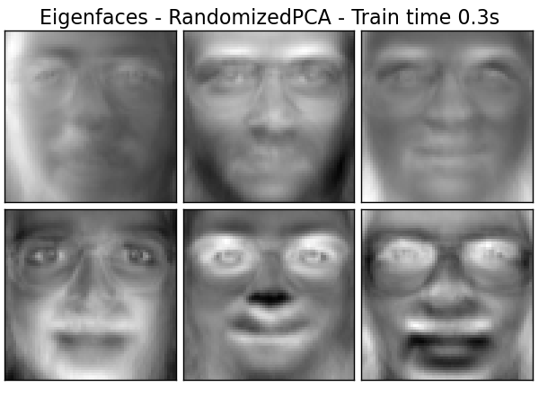
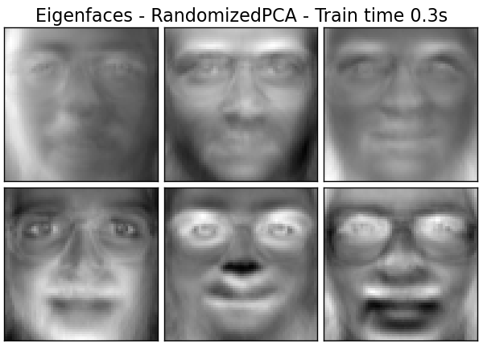

Problem Definition
Common data science problems
"We have all this data, what can we do with it?"
"I want my big data thing to perform better"
"Give me actionable analytics about our customers"

Better-defined problems
- Build a model to predict sales of a marketing campaign
- Create a system that runs campaigns that automatically adapt to customer feedback
- Identify key objects in images
- Improve clickthrough rates on search engine results
- Detect whale calls from underwater recordings to prevent collisions
Steps to solving data science problems
Steps to solving data science problems
#1: Figure out what the problem is
Steps to solving data science problems
#2: Find out how the solution will be measured
Steps to solving data science problems
#3: "Solve" problem
Solve problem?

Solve problem with ML?

Exploring the ML map
- Base assumption: you have data and a rough idea what you want to find
- All methods require features as input
- Four main areas:
- Supervised classification
- Supervised regression
- Unsupervised clustering
- Dimensionality reduction
Supervised classification: Definition
Supervised: we have labelled data to train on
Classification: need to predict/infer the class/category of each instance
Supervised classification: Example #1
Classifying iris species using k-nearest-neighbours

Supervised classification: Example #2
Classifying spam emails with support vector machines

Supervised regression: Definition
Supervised: we have labelled data to train on
Regression: need to predict/infer a numeric quantity for each instance
Supervised regression: Example #1
Linear regression to predict diabetes progression

Supervised regression: Example #2
Predicting rent with decision trees

Unsupervised clustering: Definition
Unsupervised: no labelled training data
Clustering: group together similar instances, can be soft or hard
Unsupervised clustering: Example #1
Discovering topics in texts with latent Dirichlet allocation

Unsupervised clustering: Example #2
Segmenting images with spectral clustering

Dimensionality reduction: Definition
Dimensionality: number of different feature types
Reduction: decreasing the feature number by selection or transformation
Dimensionality reduction: Example #1
Decomposing faces with principal component analysis
 
Dimensionality reduction: Example #2
Discovering movie themes with matrix factorisation

Beyond the map...
- Preprocessing
- Visualisation
- Language processing: parse trees, part-of-speech tagging
- Generation: written language, speech, movement
- Active learning
- And much more...
Beyond the map...
Thinking and putting everything together
The human behind the machine
Why are data scientists needed?
- Ask questions
- Reduce and rephrase problems
- Come up with reasonable metrics
- Choose the right tools
- Handle data drift
- Understand business needs
- Make it work in production